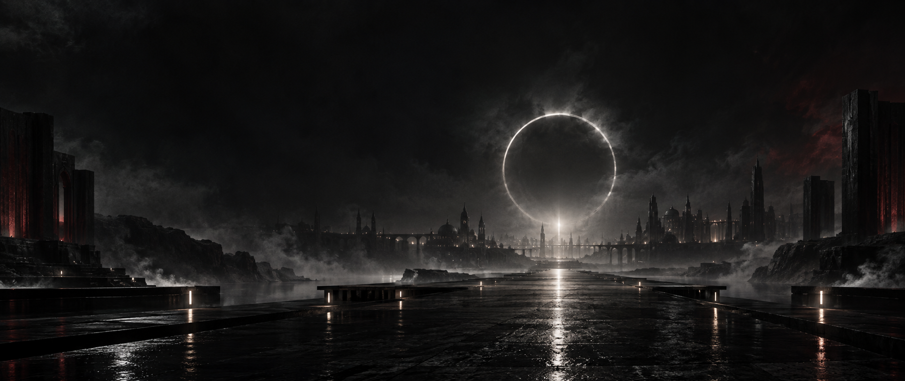

01
Featured record
Hell of Pain
A first doorway into the sound of Jai Ghost World—raw emotion shaped into atmosphere.

Jai Loyal presents
Pain becomes sound.
Memory becomes cinema.
Chapter I · The sound
Four records. One world.
Featured record
A first doorway into the sound of Jai Ghost World—raw emotion shaped into atmosphere.
From the world
From the world
From the world
Chapter II · Motion
Songs seen through another lens.
Jai Ghost visual
Visual treatment
Film concept
Chapter III · The artist
Jai Ghost World is the meeting point between music and cinema—an independent universe built from pressure, memory, transformation, and truth.
Jai Loyal is the artist behind the work. Jai Ghost is the presence inside it: the part that turns what cannot be said into records, scenes, and lasting images.
Every song is a scene.
Every frame leaves a trace.
Chapter IV · The archive
Unreleased frames and behind-the-scenes moments.
Bookings · Features · Creative collaborations
Official booking email will appear here.